We begin our process to create models for predicting house prices in Philadelphia by loading a comprehensive dataset of property sales from the Philadelphia Office of Property Assessment. The raw dataset includes a wide range of attributes describing the sale of the property, assessment of the property, structural characteristics, and spatial information about location. The raw dataset includes 583,588 observations (rows) and 80 variables (columns). Because our goal is to build a predictive model for residential sale prices using structural information, census data, and spatial amenities, we prepare the data by cleaning it up using a series of steps.
First, only variables relevant to residential property valuation were retained. We include transaction variables, structural characteristics, and geographic identifiers. Irrelevant or mostly incomplete fields were removed to improve model stability.
Next, we restrict the dataset to transactions occurring in 2024 and 2025 for relevancy. By limiting the analysis to a narrower time window, we aim to reduce distortions caused by inflation and market cycles while simultaneously decreasing the computational size of the dataset. We then filter the dataset further to remove problematic observations. We excluded transactions with missing sale prices and limited the data to only residential properties (category codes 1 and 2).
Further, extremely low sales below $10,000 were removed because these would skew the model as they do not typically represent the true value of the home and are sales made under special circumstances. Additional outliers were identified and removed using a three-standard-deviation rule to account for unusually high or low sale prices that could distort regression estimates.
Next, we address structural outliers. For example, a small number of properties reported extremely large livable areas (30,000 to 70,000 square feet), which are inconsistent with typical residential housing stock. We remove these properties to maintain a realistic distribution of housing characteristics. Lastly, we removed observations that were missing key structural variables we wanted to examine and possibly include in our models (for example, bedrooms, bathrooms, garage spaces).
After cleaning, we transformed our spatial coordinate system to align with the Philadelphia County boundary (EPSG:2272).
#Philly_data <- st_read(here("labs/lab_3/data/opa_properties_public.geojson"), quiet = TRUE)#columns_keep <- c("building_code_new", "category_code", "central_air", "exterior_condition", "garage_spaces", "location", "sale_price", "number_of_bathrooms", "number_of_bedrooms", "number_of_rooms", "number_stories", "quality_grade", "sale_date", "total_area", "total_livable_area", "year_built", "objectid", "geometry") #Columns that we are selecting out from data#Philly_data_working <- Philly_data %>%# select(columns_keep)#Philly_data_working <- Philly_data_working %>%#mutate(sale_year = year(sale_date))#Philly_data_working <- Philly_data_working %>%#filter(sale_year == 2024 | sale_year == 2025) #Note that we used: 2024 and 2025 to save on data size - also makes data less subject to inflation#Philly_data_working <- Philly_data_working %>%#filter(!is.na(sale_price)) %>%#filter(category_code == 1 | category_code == 2) #code 1 is for residential and code 2 is for apartments and hotels#Wrote out the philly_data_working set here; going to read it back in so hopefully this will save space on githubPhilly_data_working <-st_read(here("D:/Ph.D/US Pakistan Knowledge Corridore/Upenn/Subjects/Public Policy Analytics/Public-Policy-Analytics/lab_3/data/Philly_data_working.geojson"), quiet =TRUE)phillyboundary <-counties(state ="PA", cb =TRUE) %>%subset(NAME =="Philadelphia")phillyboundary <-st_transform(phillyboundary, crs =2272)Philly_data_working <-st_transform(Philly_data_working, st_crs(phillyboundary))#all of the houses are inside of Philly -- LETS GO!clipped_outside <-st_difference(Philly_data_working, st_union(phillyboundary))#Philly_data_working <- Philly_data_working %>%#filter(sale_price > 5000) #tried this, but I think I want a more statistically robust method.Philly_data_working <- Philly_data_working %>%filter(sale_price >10000) %>%filter(between( sale_price,mean(sale_price, na.rm =TRUE) -3*sd(sale_price, na.rm =TRUE),mean(sale_price, na.rm =TRUE) +3*sd(sale_price, na.rm =TRUE) )) #moving outliers - first removing sales that are less than 10K, in order to get a more accurate picture of average private market sales, then looking at outliers that are more than 3 standard deviations from the mean - think this is a good method#After exploratory analysis of total livable area, there are two crazy outliers @30,000 sqft and 70,000sqft. going to remove thesePhilly_data_working <- Philly_data_working %>%filter(total_livable_area <30000)#now want to clean up bedrooms, bathrooms, stories, year-built, and quality grade, as these are going to be important factors to have a complete data set - also garage spaces and building code newPhilly_data_working <- Philly_data_working %>%filter(!is.na(sale_price) &!is.na(number_of_bedrooms) &!is.na(number_of_bathrooms) &!is.na(quality_grade) &!is.na(year_built) &!is.na(year_built) &!is.na(garage_spaces) &!is.na(building_code_new))# I think that we shouldn't use central_air or total_area - there are lots of NAs and 0 for them respectively#also number of roomsPhilly_data_working <- Philly_data_working %>%select(-central_air, -total_area, -number_of_rooms)
Properties Dataset Before and After Cleaning
Show Code
# BEFORE CLEANINGbefore_summary <-data.frame(Dataset ="Raw OPA Dataset",Observations =583534,Variables =80)# AFTER CLEANINGafter_summary <-data.frame(Dataset ="Cleaned Housing Dataset",Observations =nrow(Philly_data_working),Variables =ncol(Philly_data_working))dimension_table <-rbind(before_summary, after_summary)library(knitr)kable(dimension_table, caption ="Dataset Dimensions Before and After Cleaning")
Dataset Dimensions Before and After Cleaning
Dataset
Observations
Variables
Raw OPA Dataset
583534
80
Cleaned Housing Dataset
26799
16
Census Data
To capture the broader socioeconomic context of neighborhoods, demographic, and economic variables were obtained from the American Community Survey (ACS) 5-year estimates. We retrieved Census tract-level data using the tidycensus package. We include several variables commonly associated with neighborhood housing markets, like total population, educational attainment, racial and ethnic composition, and median household income. In addition to the raw ACS counts, we categorize neighborhoods based on their median home value into four categories, from super high value to low value.
First, the share of residents with a bachelor’s degree was calculated as the proportion of the total population holding a bachelor’s degree. Educational attainment is often used as a proxy for neighborhood socioeconomic status and human capital. Second, racial and ethnic composition variables were calculated as the proportion of residents identifying as Black, Latino, or Native American. These variables help capture patterns of residential segregation and demographic composition across neighborhoods. Population density was calculated by dividing the total tract population by the land area of the tract in square miles. Population density is an important indicator of urban form and development intensity, which can influence housing demand and property values. After computing these derived measures, the census tract geometries were projected into the same coordinate reference system as the housing dataset. A spatial join was then performed to assign each property sale the characteristics of the census tract in which it is located.
Code gathering census data
Show Code
# NEED TO GET: POPULATION, PERCENT WITH BACHELORS DEGREE, PERCENT BLACK, LATINO, OR NATIVE AMERICANphilly_acs <-get_acs(geography ="tract",state ="PA",county ="Philadelphia",variables =c(population ="B01003_001",bachelors ="B15003_022",black ="B02001_003",latino ="B03003_003",native ="B02001_004",median_income ="B19013_001" ),year =2024,survey ="acs5",geometry =TRUE,output ="wide")philly_acs <-st_transform(philly_acs, st_crs(Philly_data_working))
Spatial Data
Loading in and preparing our spatial data
Show Code
hoods <-st_read(here("D:/Ph.D/US Pakistan Knowledge Corridore/Upenn/Subjects/Public Policy Analytics/Public-Policy-Analytics/lab_3/data/philadelphia-neighborhoods.geojson"), quiet =TRUE)hoods <- hoods %>%st_transform(st_crs(Philly_data_working)) philly_data_working_hoods <- Philly_data_working %>%st_join(hoods)philly_data_working_hoods <- philly_data_working_hoods %>%select(-LISTNAME, -MAPNAME) %>%group_by(NAME) %>%filter(!is.na(NAME)) %>%#removing the sale that didn't have a corresponding neighborhoodsummarize(median_hood_price =median(sale_price)) philly_data_working_hoods <- Philly_data_working %>%st_join(philly_data_working_hoods)philly_data_working_hoods <- philly_data_working_hoods %>%filter(!is.na(NAME))philly_data_working_hoods <- philly_data_working_hoods %>%mutate(percent_rank_home_value =percent_rank(median_hood_price))philly_data_working_hoods <- philly_data_working_hoods %>%mutate(neighborhood_category =case_when( percent_rank_home_value >0.90~"super high value", percent_rank_home_value >0.75~"high value", percent_rank_home_value >0.50~"upper-mid value", percent_rank_home_value >0.25~"lower-mid value",TRUE~"low value" ) ) #Note the way that we categorized neighborhoods. Note that we could add another "ultra-high" category. #Loading in the needed spatial datasepta <-st_read(here("D:/Ph.D/US Pakistan Knowledge Corridore/Upenn/Subjects/Public Policy Analytics/Public-Policy-Analytics/lab_3/data//Transit_Stops_(Spring_2025).geojson"), quiet =TRUE)Vacant_Block_Percentages <-st_read(here("D:/Ph.D/US Pakistan Knowledge Corridore/Upenn/Subjects/Public Policy Analytics/Public-Policy-Analytics/lab_3/data/Vacant_Block_Percent_Building.geojson"), quiet =TRUE)Vacant_Indicators <-st_read(here("D:/Ph.D/US Pakistan Knowledge Corridore/Upenn/Subjects/Public Policy Analytics/Public-Policy-Analytics/lab_3/data/Vacant_Indicators_Bldg.geojson"), quiet =TRUE)PPR_Props <-st_read(here("D:/Ph.D/US Pakistan Knowledge Corridore/Upenn/Subjects/Public Policy Analytics/Public-Policy-Analytics/lab_3/data//PPR_Properties.geojson"), quiet =TRUE)Crimes <-st_read(here("D:/Ph.D/US Pakistan Knowledge Corridore/Upenn/Subjects/Public Policy Analytics/Public-Policy-Analytics/lab_3/data//crime_counts.geojson"), quiet =TRUE)crime_data <-st_read(here("D:/Ph.D/US Pakistan Knowledge Corridore/Upenn/Subjects/Public Policy Analytics/Public-Policy-Analytics/lab_3/data//incidents_part1_part2/incidents_part1_part2.shp"), quiet =TRUE) crime_data <- crime_data %>%filter(!st_is_empty(geometry) &!is.na(geometry))#Cleaning Crimes Data# ensure geometries are validcrime_data <- crime_data %>%filter(st_is_valid(geometry))# remove missing coordinatescrime_data <- crime_data %>%filter(!is.na(point_x) &!is.na(point_y))# define violent crimes; after looking at the column of crimes, i selected these as violent. i excluded robberies even those with firearms. see notes for full listviolent_codes <-c("Aggravated Assault No Firearm","Aggravated Assault Firearm","Other Assaults","Rape","Homicide - Criminal")# filter for violent crimesviolent_crimes <- crime_data %>%filter(text_gener %in% violent_codes)# keep only necessary columnsviolent_crimes <- violent_crimes %>%select(objectid, ucr_genera, text_gener, point_x, point_y, geometry)# renaming columnsviolent_crimes <- violent_crimes %>%rename(crime_code = ucr_genera,crime_type = text_gener )# transform crs to matchviolent_crimes <-st_transform(violent_crimes, 2272)# double check there are no NAscolSums(is.na(violent_crimes))
# check and remove duplicatesviolent_crimes <- violent_crimes %>%distinct(objectid, .keep_all =TRUE)# make sure crs matches across datasetsviolent_crimes <-st_transform(violent_crimes, st_crs(philly_acs))# join crimes to census tracts by assigning each crime to the tract where it occuredcrime_tracts <-st_join(violent_crimes, philly_acs, join = st_within)# rewrote this next line because there was a row of NAs for geoidcrime_counts <- crime_tracts %>%st_drop_geometry() %>%filter(!is.na(GEOID)) %>%# remove crimes not assigned to a tractgroup_by(GEOID) %>%summarise(violent_crimes =n() )spta_rail <- septa %>%filter(LineAbbr %in%c("L1 OWL", "B1 OWL", "T5", "T4", "T3", "T2", "T1", "G1"))regional_rail_stations <-st_read(here("D:/Ph.D/US Pakistan Knowledge Corridore/Upenn/Subjects/Public Policy Analytics/Public-Policy-Analytics/lab_3/data/Regional_Rail_Stations.geojson"), quiet =TRUE)
In addition to structural and demographic factors, housing prices are influenced by the spatial accessibility of urban amenities. We include several spatial features constructed from data from OpenDataPhilly to capture access to transportation, parks, and Center City.
Transit Accessibility
We measure transit accessibility by using geospatial datasets of SEPTA transit stops and Regional Rail stations. Rail transit stops were filtered to include only lines providing high-capacity service because we deemed these to be more valuable for convenience than other stops. For each property, the nearest transit stop and nearest Regional Rail station were idenfitied using the st_nearest_feature() function. We calculated the distances from each property to the nearest transit stop and Regional Rail station. After an initial evaluation of our model with these metrics, we decided to go back and create binary indicators for whether a property is located within one-half mile of a transit station. We did this to improve the RMSE of our model.
Park Accessibility
Geographic data on public parks and recreation properties were obtained from the Philadelphia Parks and Recreation department. Using spatial nearest-neighbor calculations, the distance from each property to the nearest park was computed and converted into miles. This variable captures the accessibility of green space for each residential property.
Downtown Accessibility
We include a metric measuring proximity to downtown because homes are generally more expensive because of land scarcity, convenience and access to more and higher quality amenities, and closeness to employment hubs. To measure this relationship in our models, we select City Hall as a proxy for the city’s central business district. We created a point geometry for ‘downtown’ using the geographic coordinates for city Hall. Then, we calculated the distance from each property to City Hall. Our preliminary analysis suggested that the relationship between house values and downtown distance may be nonlinear, so we also conducted a quadratic transformation of this distance to use in our model.
Displaying Spatial Datasets
Show Code
#Now developing a summary table for displaying datasetsspatial_summary <-data.frame(Dataset =c("Raw Crime Data","Cleaned Violent Crime Dataset","Park Properties (PPR)","Transit Stops","Regional Rail Stations","Vacant Block Percentages" ),Rows =c(nrow(crime_data),nrow(violent_crimes),nrow(PPR_Props),nrow(septa),nrow(regional_rail_stations),nrow(Vacant_Block_Percentages) ),Columns =c(ncol(crime_data),ncol(violent_crimes),ncol(PPR_Props),ncol(septa),ncol(regional_rail_stations),ncol(Vacant_Block_Percentages) ))kable( spatial_summary,caption ="Table X. Spatial Amenities Datasets Used in the Analysis")
Table X. Spatial Amenities Datasets Used in the Analysis
Livable area shows one of the strongest relationships with housing price. Larger homes consistently sell for higher prices, and the positive linear trend between log livable area and log sale price suggests that increases in square footage substantially increase housing value. This strong association supports the inclusion of livable area as a key predictor in the housing price model.
Sale prices increase with improvements in exterior condition. Homes classified in better exterior condition categories tend to have higher median sale prices, suggesting that visible structural maintenance and curb appeal are valued by buyers. However, there is still substantial variation in prices within each condition category, indicating that other structural and neighborhood factors also influence housing prices.
Show Code
ggplot(philly_data_working_hoods,aes(x =as.factor(exterior_condition),y =log(sale_price))) +geom_boxplot(fill ="steelblue", alpha =0.7) +labs(title ="Housing Prices by Exterior Condition",x ="Exterior Condition",y ="Log Sale Price" ) +theme_minimal()
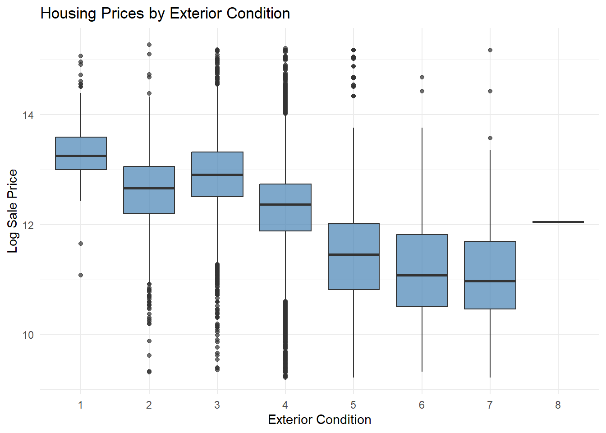
Building type:
Housing prices vary across building types. Certain building types, like larger single-family homes or multi-story properties, tend to command higher prices compared to smaller or more basic structures. This pattern likely reflects differences in housing size, construction quality, and overall desirability across property types.
Show Code
ggplot(philly_data_working_hoods,aes(x =as.factor(building_code_new),y =log(sale_price))) +geom_boxplot(fill ="darkorange", alpha =0.7) +labs(title ="Housing Prices by Building Type",x ="Building Code",y ="Log Sale Price" ) +theme_minimal()
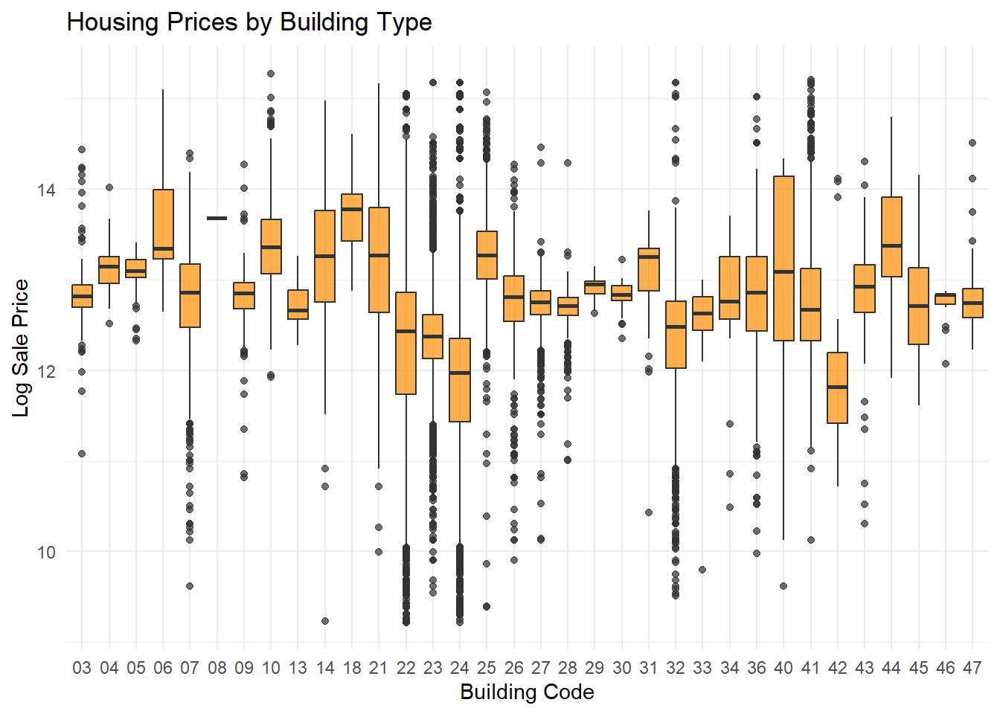
Garage spaces:
There is a positive relationship between the number of garage spaces and housing prices. Homes with more garage spaces generally sell for higher prices, reflecting the added value of off-street parking in dense urban areas like Philadelphia. The trend line indicates that each additional garage space is associated with higher expected sale prices.
Show Code
ggplot(philly_data_working_hoods,aes(x = garage_spaces,y =log(sale_price))) +geom_jitter(alpha =0.3, width =0.2) +geom_smooth(method ="lm",color ="red",linewidth =1.2) +labs(title ="Housing Prices and Garage Spaces",x ="Number of Garage Spaces",y ="Log Sale Price" ) +theme_minimal()
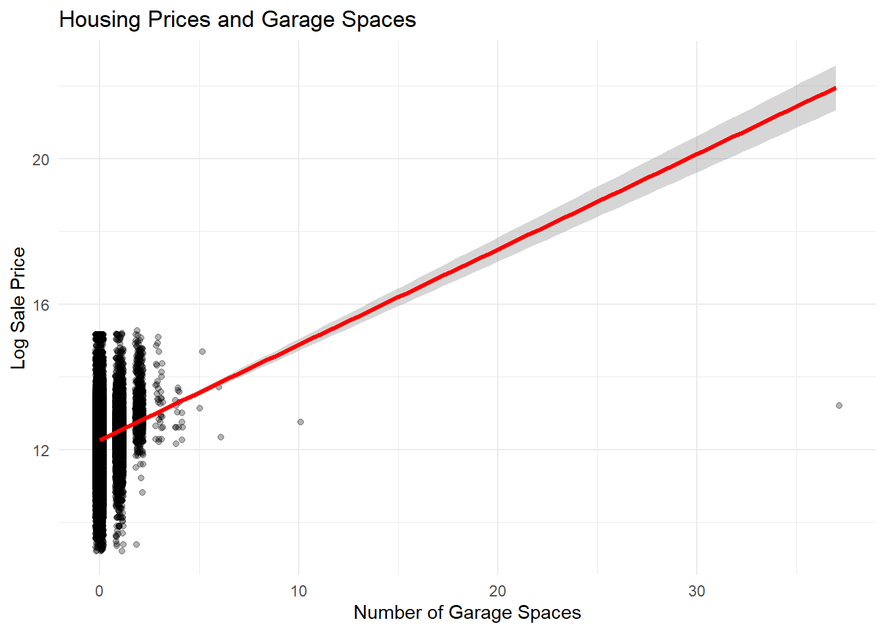
Number of bathrooms:
Housing prices rise with the number of bathrooms. Properties with more bathrooms tend to command higher sale prices, likely because additional bathrooms increase household convenience and signal larger or more modern homes. The upward trend suggests that bathroom count is an important structural feature influencing property value.
Show Code
ggplot(philly_data_working_hoods,aes(x = number_of_bathrooms,y =log(sale_price))) +geom_jitter(alpha =0.3, width =0.2) +geom_smooth(method ="lm",color ="red",linewidth =1.2) +labs(title ="Housing Prices and Number of Bathrooms",x ="Number of Bathrooms",y ="Log Sale Price" ) +theme_minimal()
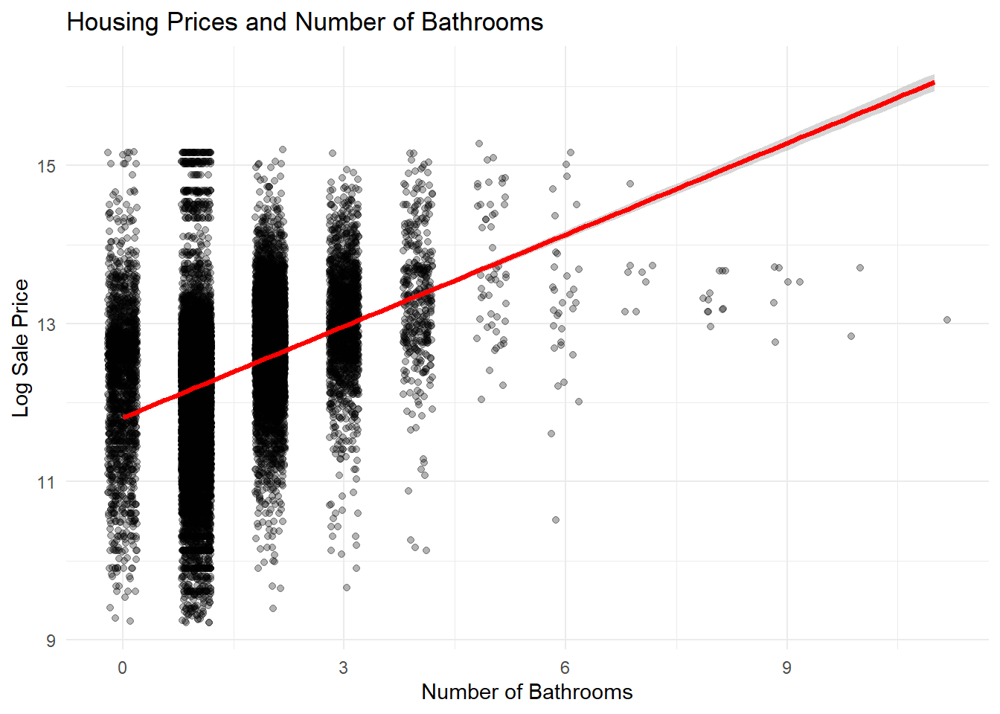
Number of bedrooms:
Homes with more bedrooms generally sell for higher prices, although the relationship is less linear than for some other structural features. While additional bedrooms increase potential household capacity, the variation in prices suggests that bedroom count alone does not fully capture the value of a property, especially when other factors such as total living area and neighborhood characteristics are considered.
Show Code
ggplot(philly_data_working_hoods,aes(x = number_of_bedrooms,y =log(sale_price))) +geom_jitter(alpha =0.3, width =0.2) +geom_smooth(method ="lm",color ="red",linewidth =1.2) +labs(title ="Housing Prices and Number of Bedrooms",x ="Number of Bedrooms",y ="Log Sale Price" ) +theme_minimal()
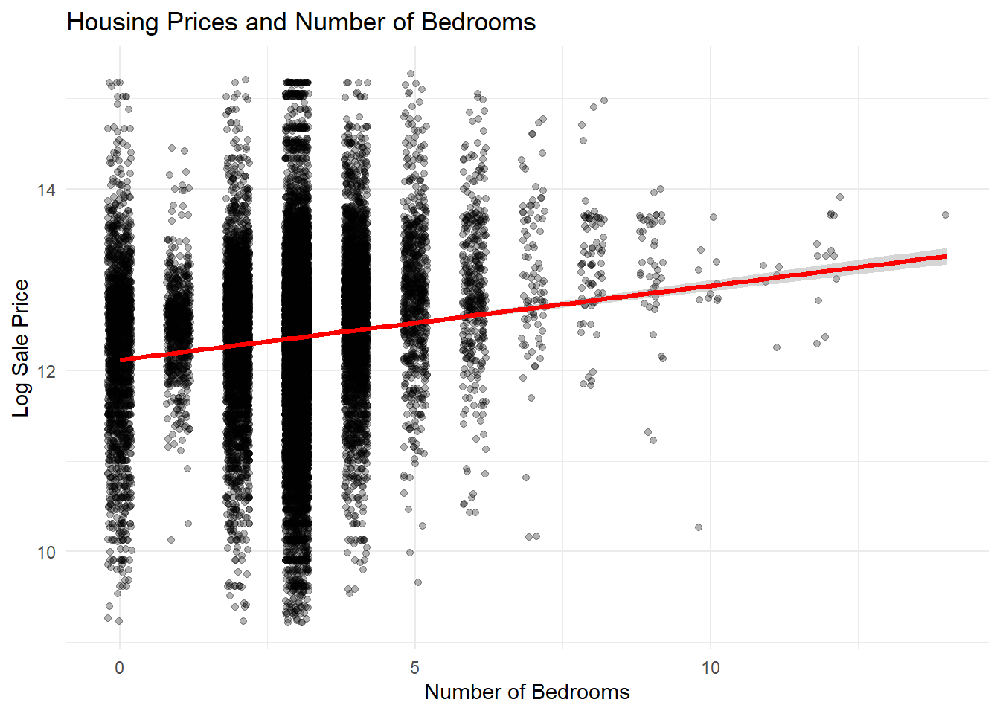
Age of structure:
The relationship between housing age and sale price appears nonlinear. Newer homes often command higher prices due to modern construction and lower maintenance needs, while moderately older homes may still retain value depending on renovations or neighborhood desirability. Very old homes may show greater variation in price, reflecting differences in renovation status and historic housing stock. We removed outliers by filtering for homes less than 300 years old.
Show Code
philly_data_working_hoods <- philly_data_working_hoods %>%mutate(year_built =as.numeric(year_built),structure_age = (2026- year_built)) %>%filter(structure_age <300)ggplot(philly_data_working_hoods,aes(x = structure_age,y =log(sale_price))) +geom_point(alpha =0.25) +geom_smooth(method ="lm",formula = y ~ x +I(x^2),color ="darkred",linewidth =1.2) +labs(title ="Housing Prices and Structure Age",x ="Structure Age (years)",y ="Log Sale Price" ) +theme_minimal()
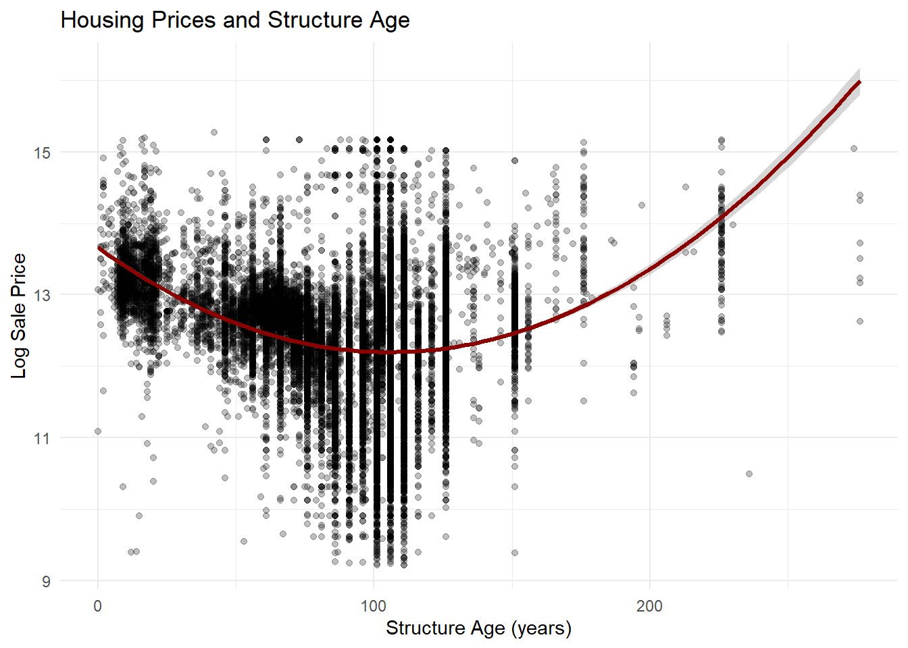
Spatial Distribution of Housing Values by Neighborhood
The spatial distribution of housing values reveals clear geographic patterns across Philadelphia. Higher-value neighborhoods are generally clustered amongst each other like from Fishtown down to Queen Village, where homes are categorized between high value and super high value. Lower-value neighborhoods are also concentrated, but throughout parts of North and West Philadelphia, where homes are low and lower-mid value. Unsurprisingly, these spatial patterns suggest that wealth and poverty are similarly concentrated, and neighborhoods are rarely mixed-income.
The relationship between housing prices and distance from downtown Philadelphia appears nonlinear. Housing prices initially decline as distance from the city center increases, but after several miles prices begin to rise again. This U-shaped pattern likely reflects Philadelphia’s spatial housing structure, where both central neighborhoods and some suburban areas command higher prices, while certain intermediate areas have lower housing values. This pattern supports the inclusion of a quadratic distance term in the regression model to capture this nonlinear relationship.
Show Code
cityhall <-st_point(c(-75.1635, 39.9526)) %>%#coordinates for city hallst_sfc(crs =4326) %>%st_transform(st_crs(philly_data_working_hoods)) #make sure crs match
Show Code
philly_data_working_hoods$dist_to_downtown <-st_distance( philly_data_working_hoods, cityhall)philly_data_working_hoods$dist_to_downtown_miles <-as.numeric(philly_data_working_hoods$dist_to_downtown) /5280#convert values into numeric and converting from feet to miles
Show Code
ggplot(philly_data_working_hoods,aes(x = dist_to_downtown_miles,y =log(sale_price))) +geom_point(alpha =0.25) +geom_smooth(method ="lm",formula = y ~ x +I(x^2),color ="darkred",linewidth =1.2) +labs(title ="Housing Prices and Distance to Center City",x ="Distance to Downtown (miles)",y ="Log Sale Price" ) +theme_minimal()
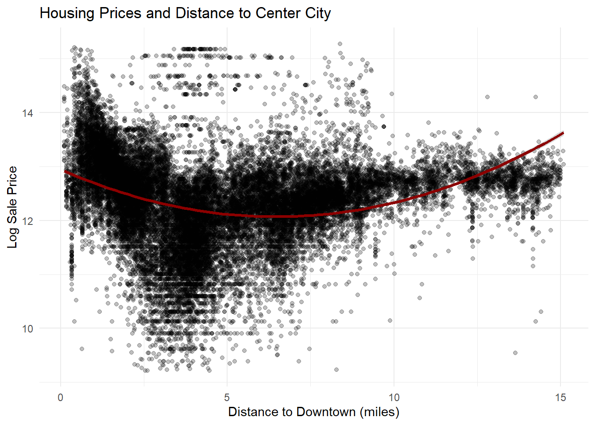
Distance to parks
The relationship between housing prices and distance to parks appears weak. The regression line is nearly flat, indicating that distance to the nearest park has only a small association with housing prices in the dataset. Although access to parks may contribute to neighborhood quality of life, the scatter of points suggests that other structural and neighborhood factors likely play a more significant role in determining housing prices.
Show Code
#Now need to compute distance to parks for each housePPR_Props <- PPR_Props %>%st_transform(st_crs(philly_data_working_hoods))nearest_park <-st_nearest_feature(philly_data_working_hoods, PPR_Props)philly_data_working_hoods$nearest_park <- PPR_Props$public_name[nearest_park]philly_data_working_hoods$dist_to_park <-st_distance( philly_data_working_hoods, PPR_Props[nearest_park, ],by_element =TRUE)philly_data_working_hoods$dist_to_park_miles <-as.numeric(philly_data_working_hoods$dist_to_park) /5280
Show Code
ggplot(philly_data_working_hoods,aes(x = dist_to_park_miles,y =log(sale_price))) +geom_point(alpha =0.25) +geom_smooth(method ="lm",color ="darkgreen",linewidth =1.2) +labs(title ="Housing Prices and Distance to Parks",x ="Distance to Nearest Park (miles)",y ="Log Sale Price" ) +theme_minimal()
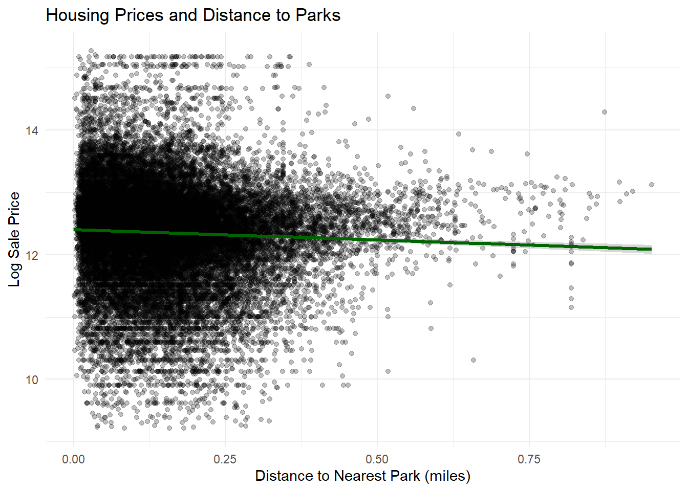
Transit Proximity
Homes located within half a mile of transit stations appear to have slightly higher median sale prices compared to homes located farther away. This pattern suggests that accessibility to public transportation may increase housing demand by improving access to employment centers and other amenities. However, as with Regional Rail access, the substantial overlap between the two distributions indicates that transit proximity is only one of many factors influencing property values.
The boxplot comparing homes within and beyond 0.5 miles of Regional Rail stations shows relatively similar distributions of housing prices between the two groups. While homes closer to Regional Rail appear to have slightly higher median prices, the difference is modest and there is substantial overlap between the distributions. This suggests that proximity to Regional Rail may provide some value to homeowners but is not a dominant factor in determining housing prices on its own.
Show Code
ggplot(philly_data_working_hoods,aes(x =as.factor(close_proximity_to_RR),y =log(sale_price))) +geom_boxplot(fill ="darkorange",alpha =0.7) +labs(title ="Housing Prices and Regional Rail Accessibility",x ="Within 0.5 Miles of Regional Rail",y ="Log Sale Price" ) +theme_minimal()
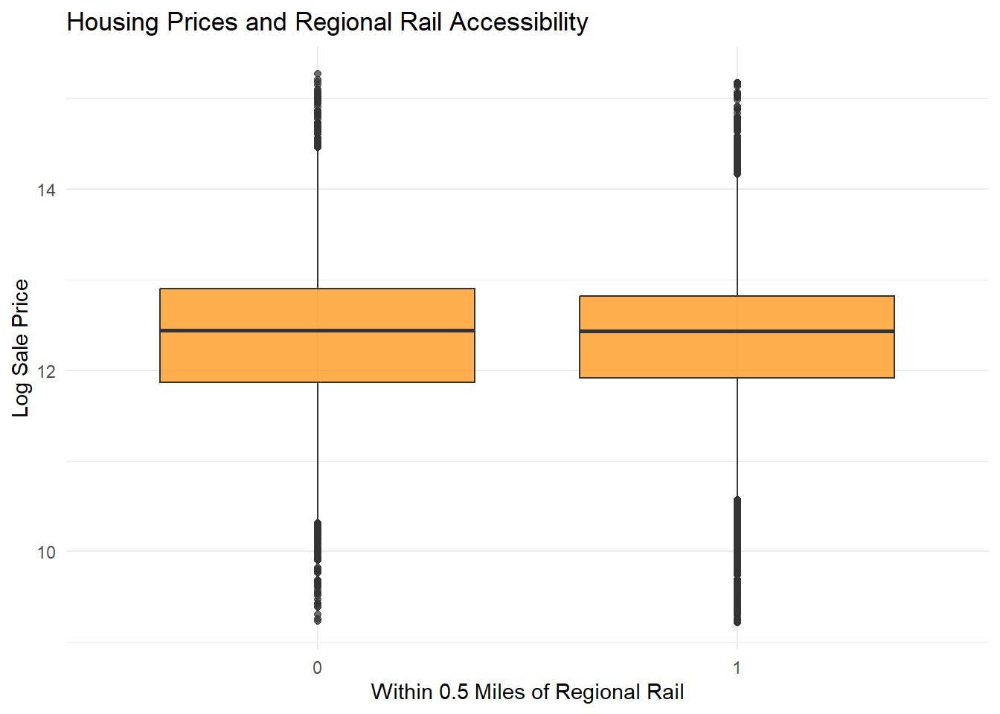
Neighborhood Vacancy
There is a strong negative relationship between neighborhood vacancy rates and housing prices. Areas with higher percentages of vacant buildings tend to have significantly lower housing prices. The steep downward trend line indicates that vacancy may be a particularly important indicator of neighborhood distress and disinvestment. High vacancy levels often signal weaker housing demand, reduced neighborhood amenities, and lower perceived neighborhood stability, all of which can depress property values.
Show Code
#Joining vacant blocks percentages to housing sales data. ***Need to note where vacancy data comes from***Vacant_Block_Percentages <- Vacant_Block_Percentages %>%select(buildvacpercentage, geometry)Vacant_Block_Percentages <-st_transform(Vacant_Block_Percentages, st_crs(philly_data_working_hoods)) philly_data_working_hoods <- philly_data_working_hoods %>%st_join(Vacant_Block_Percentages)ggplot(philly_data_working_hoods,aes(x = buildvacpercentage,y =log(sale_price))) +geom_point(alpha =0.25) +geom_smooth(method ="lm",color ="purple",linewidth =1.2) +labs(title ="Housing Prices and Neighborhood Vacancy Rates",x ="Percent Vacant Buildings",y ="Log Sale Price" ) +theme_minimal()
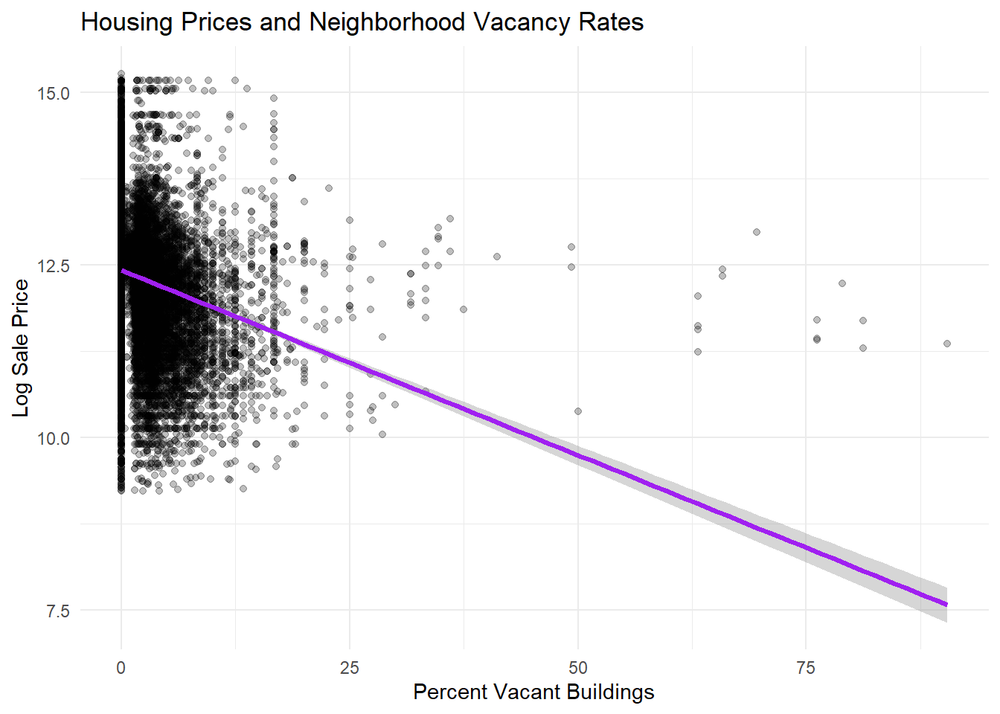
Violent Crime Rate:
The scatter plot shows a clear negative relationship between violent crime rates and housing prices. As the number of violent crimes per 1,000 residents increases, the average log sale price of homes tends to decrease. The downward sloping regression line suggests that homes located in neighborhoods with higher levels of violent crime generally sell for lower prices. However, the substantial spread of points indicates that crime alone does not determine housing values, and other structural and neighborhood factors also influence sale prices. We also believe that this pattern appears because crime tends to be more centrally located. Further, crimes may be more likely to be reported in wealthier neighborhoods because of systemic issues.
Show Code
# remove NAscrime_data <- crime_data %>%filter(!st_is_empty(geometry) &!is.na(geometry))# ensure geometries are validcrime_data <- crime_data %>%filter(st_is_valid(geometry))# remove missing coordinatescrime_data <- crime_data %>%filter(!is.na(point_x) &!is.na(point_y))# define violent crimes; after looking at the column of crimes, i selected these as violent. i excluded robberies even those with firearms. see notes for full listviolent_codes <-c("Aggravated Assault No Firearm","Aggravated Assault Firearm","Other Assaults","Rape","Homicide - Criminal")# filter for violent crimesviolent_crimes <- crime_data %>%filter(text_gener %in% violent_codes)# keep only necessary columnsviolent_crimes <- violent_crimes %>%select(objectid, ucr_genera, text_gener, point_x, point_y, geometry)# renaming columnsviolent_crimes <- violent_crimes %>%rename(crime_code = ucr_genera,crime_type = text_gener )# transform crs to matchviolent_crimes <-st_transform(violent_crimes, 2272)# double check there are no NAscolSums(is.na(violent_crimes))
# check and remove duplicatesviolent_crimes <- violent_crimes %>%distinct(objectid, .keep_all =TRUE)# make sure crs matches across datasetsviolent_crimes <-st_transform(violent_crimes, st_crs(philly_acs))# join crimes to census tracts by assigning each crime to the tract where it occuredcrime_tracts <-st_join(violent_crimes, philly_acs, join = st_within)# rewrote this next line because there was a row of NAs for geoidcrime_counts <- crime_tracts %>%st_drop_geometry() %>%filter(!is.na(GEOID)) %>%# remove crimes not assigned to a tractgroup_by(GEOID) %>%summarise(violent_crimes =n() )
Show Code
# join crime counts back to tracts in philly acsphilly_acs <- philly_acs %>%left_join(crime_counts, by ="GEOID")# replace tracts with no crimes (NA to 0)philly_acs <- philly_acs %>%mutate(violent_crimes =replace_na(violent_crimes, 0))# get crime rate per 1,000 residentsphilly_acs <- philly_acs %>%mutate(violent_crime_rate = (violent_crimes / populationE) *1000 )philly_data_working_hoods <- philly_data_working_hoods %>%st_join(philly_acs)philly_data_working_hoods <- philly_data_working_hoods %>% as.tibble %>%left_join(Crimes, by ="GEOID")philly_data_working_hoods <- philly_data_working_hoods %>%select(-geometry.y)philly_data_working_hoods <- philly_data_working_hoods %>%st_as_sf()
Show Code
ggplot(philly_data_working_hoods,aes(x = violent_crime_rate,y =log(sale_price))) +geom_point(alpha =0.25) +geom_smooth(method ="lm",color ="red",linewidth =1.2) +labs(title ="Housing Prices and Violent Crime Rates",x ="Violent Crimes per 1,000 Residents",y ="Log Sale Price" ) +theme_minimal()
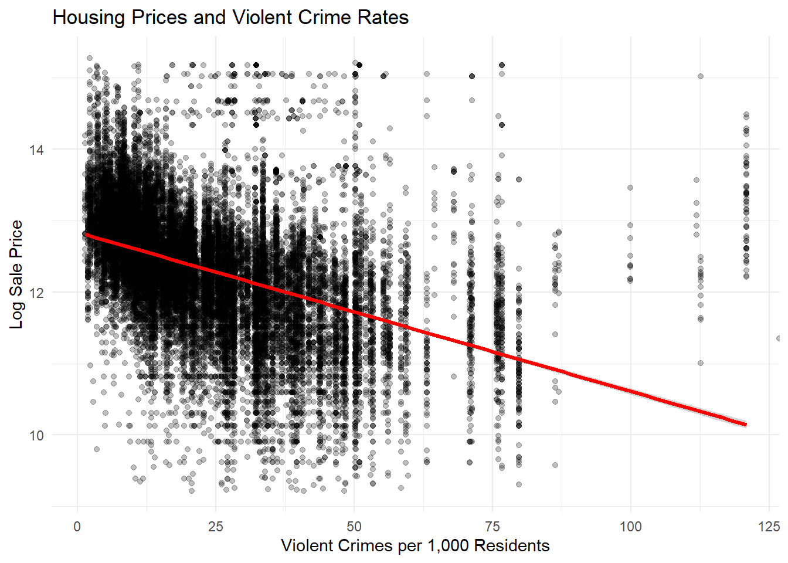
Feature Engineering
The following section will detail how we created spatial variables, census features and interaction terms as well as justifications for data transformations.
Show Code
#Looking at percents for tractsphilly_acs <- philly_acs %>%mutate(per_bachelors = bachelorsE / populationE,per_black = blackE / populationE,per_latino = latinoE / populationE, per_native = nativeE / populationE,population_density = populationE / (st_area(geometry) /27878400) )philly_acs$population_density <-as.numeric(philly_acs$population_density)#joining census tract data to the cut-down housing dataphilly_data_working_hoods <- philly_data_working_hoods %>%st_join(philly_acs)
Cenus Variables
We modified our census variables by calculating the percentage of bachelors degree holders and black or Latino residents relative to the census tract’s population. We also created a density variable based on the area of each census tract geometry.
###Population Density The below plot visualizes population density in Philadelphia
Show Code
ggplot(philly_acs) +geom_sf(aes(fill = population_density), color =NA) +scale_fill_viridis_c(option ="magma",trans ="log10",labels = comma ) +labs(title ="Population Density by Census Tract",subtitle ="Philadelphia",fill ="People per\nsq. mile" ) +theme_minimal() +theme(panel.grid =element_blank(),axis.text =element_blank(),axis.title =element_blank() )
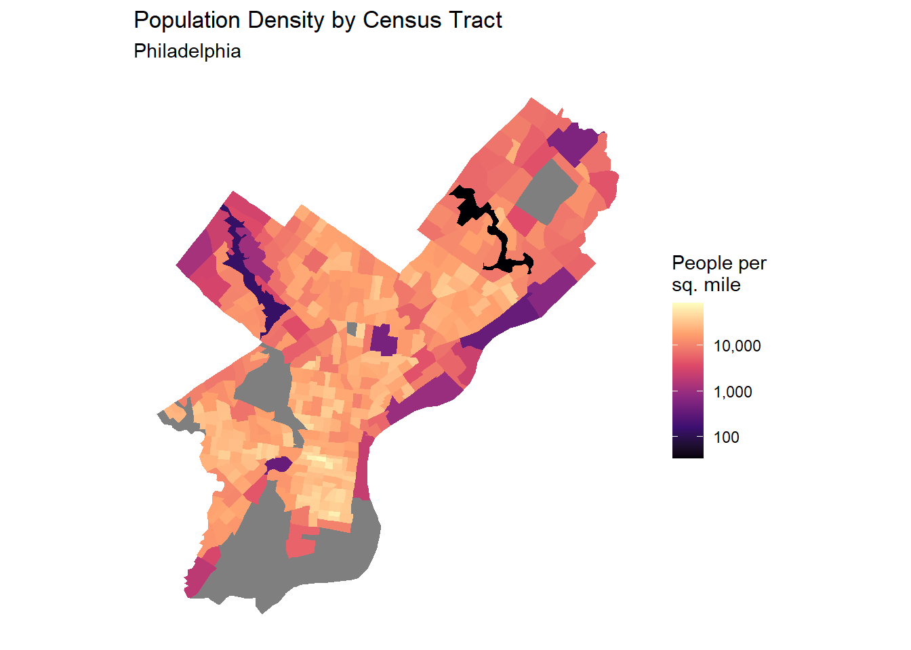
Neighborhoods as a Fixed Effect
The below code was completed earlier in our anaylsis, but is below in commented form to reference previous work
Show Code
#hoods <- st_read(here("labs/lab_3/data/philadelphia-neighborhoods.geojson"))#hoods <- hoods %>%#st_transform(st_crs(Philly_data_working)) #philly_data_working_hoods <- Philly_data_working %>%#st_join(hoods)#philly_data_working_hoods <- philly_data_working_hoods %>%# select(-LISTNAME, -MAPNAME) %>%#group_by(NAME) %>%#filter(!is.na(NAME)) %>% #removing the sale that didn't have a corresponding neighborhood#summarize(median_hood_price = median(sale_price)) #philly_data_working_hoods <- Philly_data_working %>%#st_join(philly_data_working_hoods)#philly_data_working_hoods <- philly_data_working_hoods %>%#filter(!is.na(NAME))#philly_data_working_hoods <- philly_data_working_hoods %>%#mutate(percent_rank_home_value = percent_rank(median_hood_price))#philly_data_working_hoods <- philly_data_working_hoods %>%#mutate(#neighborhood_category = case_when(#percent_rank_home_value > 0.90 ~ "super high value",#percent_rank_home_value > 0.75 ~ "high value",# percent_rank_home_value > 0.50 ~ "upper-mid value",# percent_rank_home_value > 0.25 ~ "lower-mid value",#TRUE ~ "low value"#)# ) #Note the way that we categorized neighborhoods. Note that we could add another "ultra-high" category.
In order to understand the effects that neighborhood has on home values, we gathered neighborhood data, and then grouped neighborhoods into various value groupings.
We used geometry provided by OpenDataPhilly to sort the city into neighborhoods. These shapes were compiled with feedback from residents and the Philadelphia Inquirer. After simple cleaning, we then examined the average sale price by neighborhood and divided each neighborhood into corresponding percentile ranks. We ultimately created five categories, defined as quartiles until the 90th percentile, at which we created a “super-high value” neighborhood category. This is because median home values do not follow a normal distribution, but rather have a long right tail in very high value neighborhoods. This method seeks to capture the effect of these neighborhoods independently.
##Proximity to Transit
In our initial hypothesis, we believed that close proximity to transit will increase home values. This is because proximity to rail transit provides easy access to employment opportunities and other amenities in Center City. We also hypothesized that regional rail would have similar effects, but chose to include it as another variable. We did not include regional rail as a form of rapid transit, because it serves a different demographic than transit does (suburban commuters), and has different service frequencies.
We defined transit as subway, elevated, and trolley service. Regional rail is defined as stations in SEPTA’s regional rail network. Both datasets came form OpenData Philly and required basic cleaning to select for desired lines.
Counter-intuitively, we found that proximity to transit decreased home values, not increased. This is likely because of real or perceived dis-amenities associated with transit in Philadelphia including crime and uncleanliness. Furthermore, homes that are a far distance from transit may be more likely to be in high value suburban neighborhoods in the Northwest of the City, making raw distance to transit an unreliable predictor of home values city-wide.
Show Code
philly_data_working_hoods %>%mutate(dist_to_transit =as.numeric(dist_to_transit)) %>%ggplot(aes(x = dist_to_transit, y =log(sale_price))) +geom_point(alpha =0.4) +geom_smooth(method ="lm") +theme_minimal() +labs(x ="Distance to Transit (feet)",y ="Log Sale Price" )
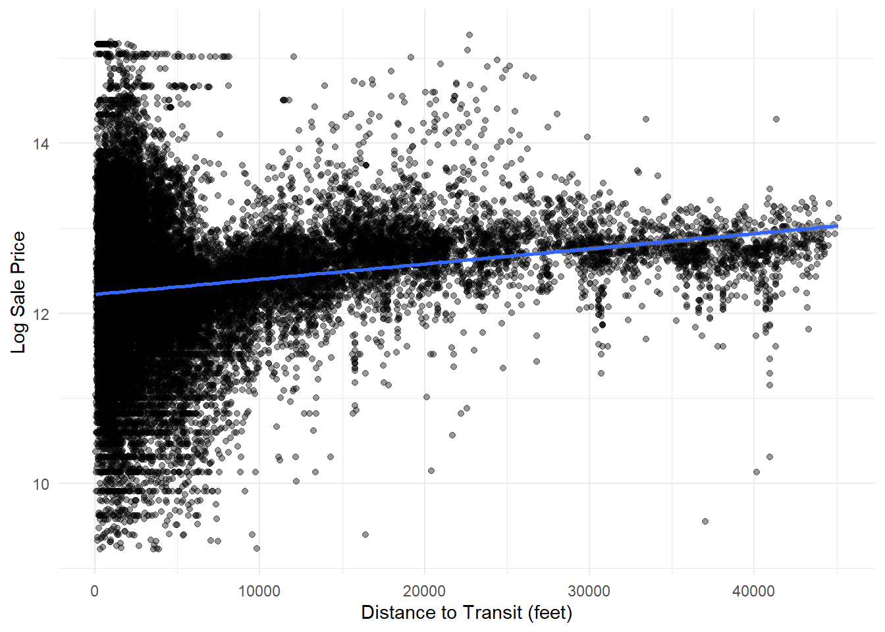
Looking at regional rail however, we see the opposite effect, as proximity to regional rail has a positive effect on Sale Price. While this may be because regional rail does not have the same stigmas associated with it, it may also be because regional rail disproportionately goes through higher-income suburban neighborhoods. Therefore, we decided that like transit, regional rail proximity wasn’t a reliable predictor.
Show Code
philly_data_working_hoods %>%mutate(dist_to_RR =as.numeric(dist_to_RR)) %>%ggplot(aes(x = dist_to_RR, y =log(sale_price))) +geom_point(alpha =0.4) +geom_smooth(method ="lm") +theme_minimal() +labs(x ="Distance to Regional Rail (feet)",y ="Log Sale Price" )
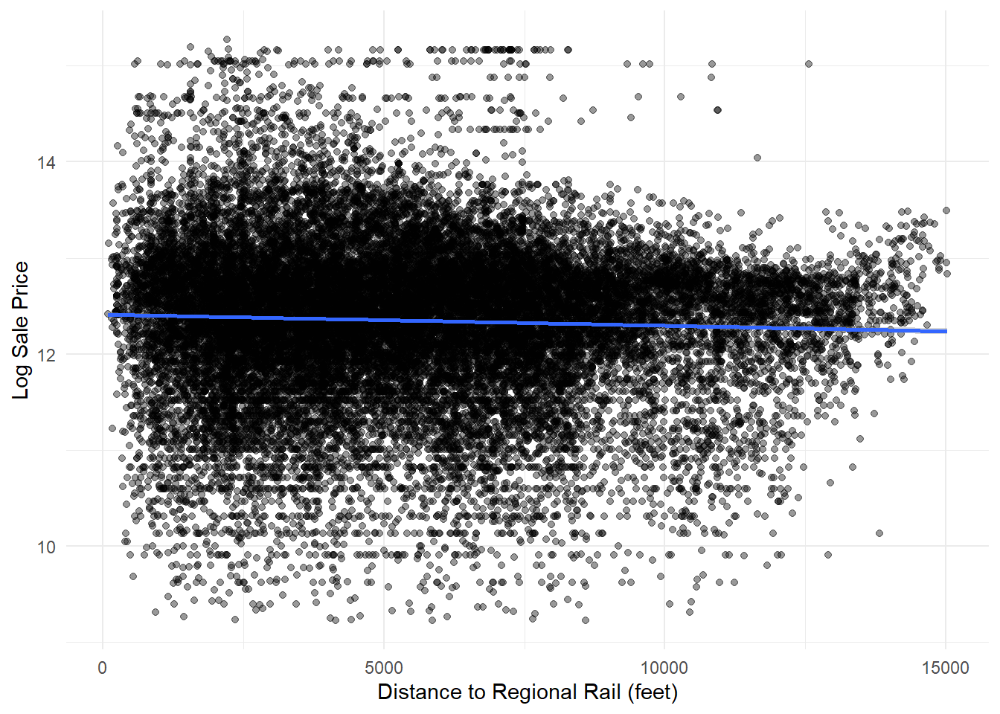
To correct for these two factors, we created a dummy variable which notes close proximity (defined as half a mile - approximately a comfortable distance to walk in the morning / afternoon) to transit. This way, we can see the effect that close proximity to regional rail or transit has on home values compared to homes where transit commuting is less realistic.
Show Code
#Looking at transit proximity in a modeltransit_adjacency <-lm(sale_price ~as.factor(close_proximity_to_transit) +as.factor(close_proximity_to_RR), data = philly_data_working_hoods)print(transit_adjacency)
#Might be interesting to see how transit impacts values at different scales - e.g. looking how it impacts Fishtown vs. N. Philly
Notably, transit adjacency and regional rail proximity decrease home values, with transit decreasing home values by approximately 39,000 dollars and proximity to regional rail decreasing home values by 46,000 dollars on average.
Vacancy
We included the percentage of each block that’s vacant as a predictor of home values. This is under the assumption that vacancy both indicates a lack of demand for a given area, and also has several dis-amenities such as unsightliness, crime, trash, and safety concerns. We decided to undertake a block-level analysis instead of looking at proximity to nearest vacant property, as we believe that vacant homes have a block-level impact rather than a singular impact on the nearest home. For example, we believe that a home that is further away from a vacant house, yet is on a block with over 50% vacancy will be more negatively impacted than one that is simply close to a vacant lot, but in a neighborhood which is otherwise free of vacancies.
We spatially joined vacant block percentages to the homes data set to find the block percentage for each home.
Show Code
#Joining vacant blocks percentages to housing sales data. ***Need to note where vacancy data comes from***Vacant_Block_Percentages <- Vacant_Block_Percentages %>%select(buildvacpercentage, geometry)Vacant_Block_Percentages <-st_transform(Vacant_Block_Percentages, st_crs(philly_data_working_hoods)) philly_data_working_hoods <- philly_data_working_hoods %>%st_join(Vacant_Block_Percentages)
Violent Crimes
We included violent crimes in our predictive analysis under the assumption of a negative relationship. We specifically used violent crimes, as we believe that total crime count would be more indicative of population density rather than actual safety concerns. For example, we theorized Rittenhouse to be a high-crime, yet high-value neighborhood due to its high population density, large number of commercial spaces and high volume of through traffic and visitors. We assumed that violent crime matters significantly more in home values than overall crime.
We defined violent crimes as aggravated assault, other assaults, rape, and criminal homicide. There may be bias in our crime data, as black and brown neighborhoods are more likely to be over-policed, and thus more likely to have higher reported crime rates than other neighborhoods. After filtering our data and doing basic cleaning, we aggregated crimes at the census tract level and joined this to our homes data.
Distance to Parks
We assume that proximity to parks will have a positive relationship to sale price, as parks are a valuable neighborhood amenity. To find this, we found the shortest distance from each home in our data set to the nearest park. This provided us with the distance to parks for each home, which we used in our regression analysis.
Distance to Center City
We initially assumed that distance to Center City has a negative relationship with home values. This is because we assumed that the high density of jobs and amenities clustered in Center City would cause home values to fall as one gained in distance from the center. As our representation of downtown, we used City Hall due to its central location in Center City.
Show Code
philly_data_working_hoods %>%ggplot(aes(x = dist_to_downtown_miles, y =log(sale_price))) +geom_point(alpha =0.3) +geom_smooth(method ="lm") +theme_minimal() +labs(x ="Distance to Center City (miles)",y ="Log Sale Price" )
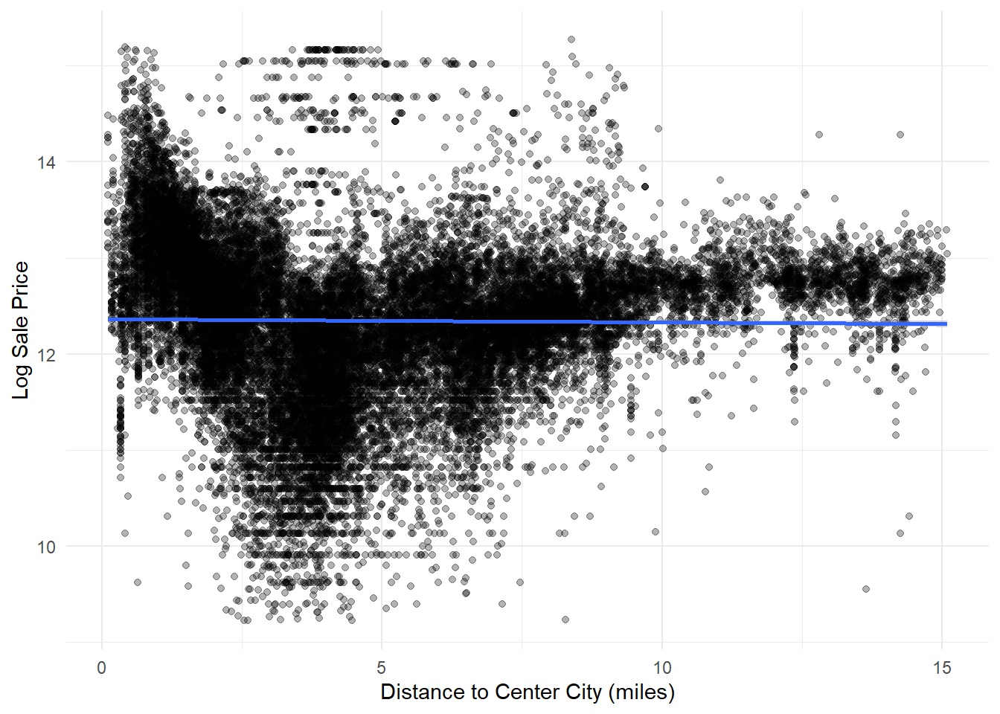
However, we were wrong in our assumption of a negative linear relationship, as the true shape appears to be more quadratic in nature. Here home values are highest close to center city, and lose value until 6.5 miles from City Hall, where home values begin to increase. This is likely due to suburbanization in Philadelphia producing home values that are higher than those in the inner-city despite being further from Center City.
Show Code
# creating new variable for square of distance to downtown to test curved relationship instead of linearphilly_data_working_hoods <- philly_data_working_hoods %>%mutate(dist_downtown_sq = dist_to_downtown_miles^2) # running quadratic modelmodel_quad_dist_downtown <-lm(log(sale_price) ~ dist_to_downtown_miles + dist_downtown_sq,data = philly_data_working_hoods %>%st_drop_geometry())summary(model_quad_dist_downtown)
Call:
lm(formula = log(sale_price) ~ dist_to_downtown_miles + dist_downtown_sq,
data = philly_data_working_hoods %>% st_drop_geometry())
Residuals:
Min 1Q Median 3Q Max
-3.6016 -0.4222 0.0891 0.4559 3.1279
Coefficients:
Estimate Std. Error t value Pr(>|t|)
(Intercept) 12.9458035 0.0133836 967.29 <0.0000000000000002 ***
dist_to_downtown_miles -0.2713299 0.0049004 -55.37 <0.0000000000000002 ***
dist_downtown_sq 0.0209777 0.0003658 57.34 <0.0000000000000002 ***
---
Signif. codes: 0 '***' 0.001 '**' 0.01 '*' 0.05 '.' 0.1 ' ' 1
Residual standard error: 0.7943 on 26804 degrees of freedom
Multiple R-squared: 0.1094, Adjusted R-squared: 0.1094
F-statistic: 1647 on 2 and 26804 DF, p-value: < 0.00000000000000022
ggplot(philly_data_working_hoods,aes(x = dist_to_downtown_miles, y =log(sale_price))) +geom_point(alpha =0.15) +geom_smooth(method ="lm",formula = y ~ x +I(x^2),color ="red",linewidth =1.2) +theme_minimal() +labs(title ="Nonlinear Relationship Between Distance to Center City and Housing Prices",x ="Distance to Downtown (miles)",y ="Log Sale Price" )
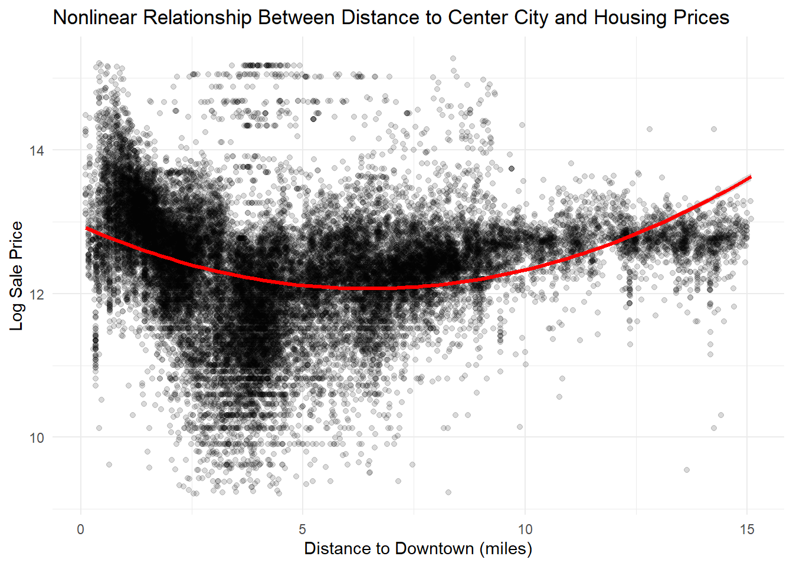
Nearest Neighbor Sale Price
Finally, we assumed that the nearest neighboring home sale would strongly predict home sales, as this is a good localized fixed effect. To produce this data, we captured the coordinates for each property and then ran a nearest neighbor analysis on the five closest sale prices. Then the average of these neighbors was used as the nearst sale price for each property in the dataset.
Show Code
# we need coordinates for each propertycoords <-st_coordinates(philly_data_working_hoods)# find the nearest 5 neighbors for each property, excluding itselfnn <-get.knn(coords, k =5)neighbor_price <-apply(nn$nn.index, 1, function(i) {mean(philly_data_working_hoods$sale_price[i], na.rm =TRUE)})philly_data_working_hoods$neighbor_sale_price <- neighbor_pricephilly_data_working_hoods$log_neighbor_price <-log(neighbor_price)summary(philly_data_working_hoods$neighbor_sale_price)
Min. 1st Qu. Median Mean 3rd Qu. Max.
23600 171500 260580 324163 392000 3431000
Addressing Skewness In the Data
Many of our data sets were skewed with a long right tail. Since normal distribution is a core assumption of OLS, we log-transformed theses data sets to yield a more normal distribution.
Show Code
skewplot3 <-ggplot(philly_data_working_hoods,aes(x = structure_age,y =log(sale_price))) +geom_point(alpha =0.4) +theme_minimal() +labs(x ="Structure Age (years)",y ="Log Sale Price" )skewplot1 <-ggplot(philly_data_working_hoods,aes(x = total_livable_area,y =log(sale_price))) +geom_point(alpha =0.4) +labs(title ="Housing Prices and Livable Area",x ="Livable Area",y ="Log Sale Price" ) +theme_minimal()skewplot2 <-ggplot(philly_data_working_hoods,aes(x = dist_to_downtown_miles,y =log(sale_price))) +geom_point(alpha =0.25) +labs(title ="Housing Prices and Distance to Center City",x ="Distance to Downtown (miles)",y ="Log Sale Price" ) +theme_minimal()skewplot4 <-ggplot(philly_data_working_hoods,aes(x = dist_to_park_miles,y =log(sale_price))) +geom_point(alpha =0.25) +labs(title ="Housing Prices and Distance to Parks",x ="Distance to Nearest Park (miles)",y ="Log Sale Price" ) +theme_minimal()library(gridExtra)grid.arrange(skewplot1, skewplot2, skewplot3, skewplot4, ncol =2)
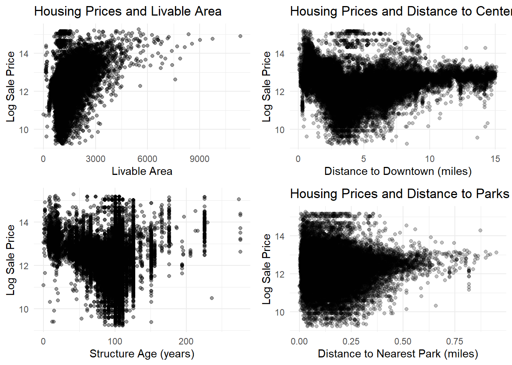
After transforming the data through a log transformation, the data better fit a normal distribution.
Show Code
logplot3 <-ggplot(philly_data_working_hoods,aes(x =log(structure_age),y =log(sale_price))) +geom_point(alpha =0.4) +theme_minimal() +labs(x ="Log Structure Age (years)",y ="Log Sale Price" )logplot1 <-ggplot(philly_data_working_hoods,aes(x =log(total_livable_area),y =log(sale_price))) +geom_point(alpha =0.4) +labs(title ="Housing Prices and Livable Area",x ="Log Livable Area",y ="Log Sale Price" ) +theme_minimal()logplot2 <-ggplot(philly_data_working_hoods,aes(x =log(dist_to_downtown_miles),y =log(sale_price))) +geom_point(alpha =0.25) +labs(title ="Housing Prices and Distance to Center City",x ="Log Distance to Downtown (miles)",y ="Log Sale Price" ) +theme_minimal()logplot4 <-ggplot(philly_data_working_hoods,aes(x =log(dist_to_park_miles),y =log(sale_price))) +geom_point(alpha =0.25) +labs(title ="Housing Prices and Distance to Parks",x ="Log Distance to Nearest Park (miles)",y ="Log Sale Price" ) +theme_minimal()library(gridExtra)grid.arrange(logplot1, logplot2, logplot3, logplot4, ncol =2)
The first model we developed only includes structural home features. This includes: exterior condition, the type of building, number of garage spaces, number of bathrooms and bedrooms, the age of the structure, and the total living area.
This model adds census data to structural data. This includes the structural data mentioned above, alongside percent with a bachelors degree, percent latino, the population density, and median income at a census tract level.
This model incorporates spatial effects such as distance to parks, distance to center city, proximity to transit, and vacancy data, and crime rates alongside structural and census data.
This model builds on the spatial effects model and uses neighborhood category as a fixed effect. This includes interacting: 1) garages with population density, as garages are space intensive and thus more expensive in dense areas 2) neighborhood value and total livable area, as livable area is more expensive in valuable expensive regions 3) population density and median income, as this differentiates between suburban wealthy communities and urban wealthy communities 4) building vacancy and median income, as this differentiates between gentrifying and non-gentrifying neighborhoods
Across our analysis, our best model incorporated spatial features. Though fixed effects fit our data better, it was worse at predicting home values than our spatial data alone. This might be because our assumptions of fixed effects were wrong or theoretically faulty. Structural features certainly mattered the most, as without them, we would expect that the data would explain 40% less of the variation in sales price compared to with structural features.
##Predicted Vs. Actuals
Show Code
make_cv_pred_plot <-function(model, model_name) { model$pred %>%ggplot(aes(x =exp(obs), y =exp(pred))) +# exp() to convert back from loggeom_point(alpha =0.3) +geom_abline(slope =1, intercept =0, color ="red", linetype ="dashed") +scale_x_continuous(labels = scales::dollar_format()) +scale_y_continuous(labels = scales::dollar_format()) +theme_minimal() +labs(title = model_name, x ="Actual Sale Price", y ="Predicted Sale Price")}p1 <-make_cv_pred_plot(cv_model_structural, "Structural")p2 <-make_cv_pred_plot(cv_model_census, "Census")p3 <-make_cv_pred_plot(cv_model_spatial, "Spatial")p4 <-make_cv_pred_plot(cv_model_FE, "Fixed Effects and Interaction")grid.arrange(p1, p2, p3, p4, ncol =2)
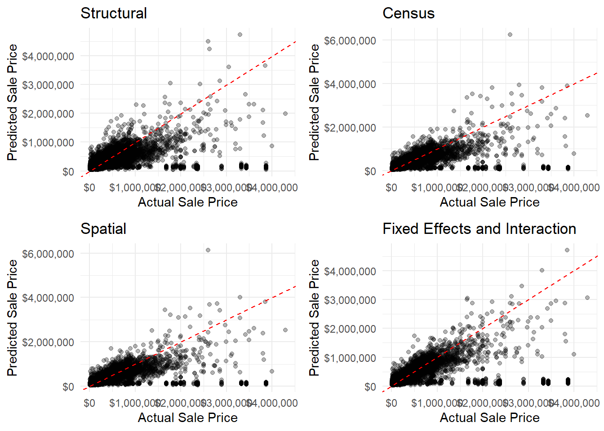
Across all of our models we are under predicting home values. This may be due to an overestimation of crime and other dis-amenities’ impact on home values. This may also be due to an over-reliance on structural features to predict home values. To improve the model we might include more spatial data such as school districts and proximity to high-paying jobs.
Spatial Predicted vs. Actuals
Show Code
philly_data_clean <- philly_data_working_hoods %>%na.omit() %>%mutate(row_id =row_number())# Join CV predictions back to spatial dataspatial_resids <- cv_model_FE$pred %>%mutate(rowIndex =as.integer(rowIndex),residual =exp(obs) -exp(pred),predicted =exp(pred),actual =exp(obs) ) %>%left_join(philly_data_clean %>%mutate(rowIndex =row_number()), by ="rowIndex") %>%st_as_sf()ggplot() +geom_sf(data = hoods, fill ="grey90", color ="grey50") +geom_sf(data = spatial_resids, aes(color = residual), size =0.05, alpha =0.5) +scale_color_gradient2(low ="blue", mid ="white", high ="red",midpoint =0,limits =c(-200000, 200000), # clamp extreme outliersoob = scales::squish, # squish values outside limits to the endslabels = scales::dollar_format(),name ="Actual - Predicted" ) +theme_void() +labs(title ="Spatial Distribution of Residuals — FE Model",subtitle ="Red = Underpredicted | Blue = Overpredicted" )
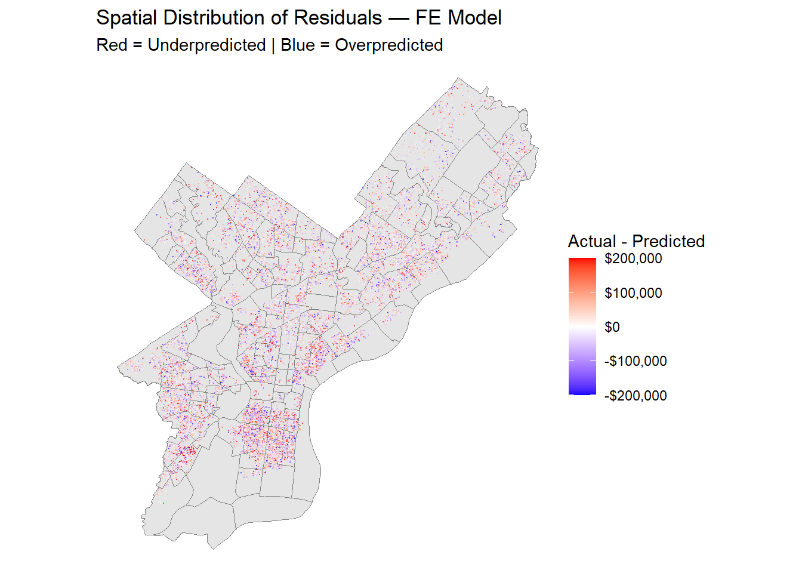
Though our predictions are not especially accurate, we appear to not suffer from chronic over or under prediction in certain neighborhoods. Perhaps we are under predicting in the Riverwards / Kensington, and over-predicting in Queen Village and South Philadelphia, but a spatial pattern is not immediately discernable.
Model Diagnostics
QQPLOT
When looking through the QQ Plots, the first initial concern is that each model carries an S curve - which indicates a tailed distribution and not in line with OLS regression. However, it is important to note that according to the Q-Q plot, the models shows a “light” tail, which means that even though the model produced errors, those errors weren’t so extreme. In the event the model had a heavy tail, we would see points on the plots that are “curving away” from the line. Although we have done a great deal of cleaning the data of extreme outliers, this S-shape might indicate that the models would benefit from further cleaning.
Across all four models, the distribution of values in the cook’s distance diagnostics is rather consistent. For the most part, cooks distance are not above our defined threshold for further investigation. Of note however, before cleaning the data futher, we had an extremely high cooks distance associated with properties wihtout a bathroom. This prompted us to remove all properties without a bathroom.
r1 <-data.frame(fitted =fitted(cv_model_structural),residuals =residuals(cv_model_structural)) %>%ggplot(aes(x = fitted, y = residuals)) +geom_point(alpha =0.3) +geom_hline(yintercept =0, color ="red") +theme_minimal() +labs(title ="Residuals vs. Fitted - Structural",x ="Fitted Values",y ="Residuals" )r2 <-data.frame(fitted =fitted(cv_model_census),residuals =residuals(cv_model_census)) %>%ggplot(aes(x = fitted, y = residuals)) +geom_point(alpha =0.3) +geom_hline(yintercept =0, color ="red") +theme_minimal() +labs(title ="Residuals vs. Fitted - Census",x ="Fitted Values",y ="Residuals" )r3 <-data.frame(fitted =fitted(cv_model_spatial),residuals =residuals(cv_model_spatial)) %>%ggplot(aes(x = fitted, y = residuals)) +geom_point(alpha =0.3) +geom_hline(yintercept =0, color ="red") +theme_minimal() +labs(title ="Residuals vs. Fitted - Spatial",x ="Fitted Values",y ="Residuals" )r4 <-data.frame(fitted =fitted(cv_model_FE),residuals =residuals(cv_model_FE)) %>%ggplot(aes(x = fitted, y = residuals)) +geom_point(alpha =0.3) +geom_hline(yintercept =0, color ="red") +theme_minimal() +labs(title ="Residuals vs. Fitted - Spatial",x ="Fitted Values",y ="Residuals" )grid.arrange(r1, r2, r3, r4, ncol =2)
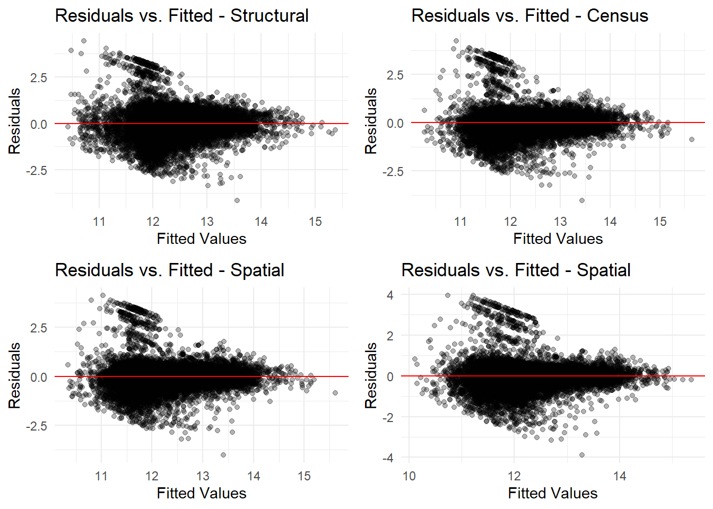
When looking for the perfect model, you want to find your predicted home prices to situate around 0, which means that there is less of a difference between the predicted and actual values. In the case of each of our models, they all had issues predicted values on the lower end of the sale price. Through this analysis of residuals, we can tell that each of our models, performed relatively well predicting for middle range home values.
Conclusion
Our model is not a strong predictor of home values in Philadelphia. Our best model, a spatial features model, is has a 70% margin of error. This means that our does not do a sufficiently good job of capturing home values in Philadelphia. Though we tend to under predict home values, there were not noticeable spatial patterns to our predictions. Furthermore, we tend to be the worse at predicting high-value homes. Given our model’s tendancy to under-predict home values among high value homes, this may result in high-income or wealthy homeowners paying less in property tax compared to lower-income homeowners.
To improve our model in the future, we recommend adding more spatial features such as school district, proximity to high paying jobs, or proximity to cultural amenities. We also recommend using more granular geographies for fixed-effects such as zip codes or census tracts, as in Philadelphia home values can vary drastically within neighborhoods. For example, Brewerytown varies widely in income and home value, and thus this scale might not be a strong fixed effect. Finally, we could improve our model through further data manipulation to generate a normal distribution for all of our data.